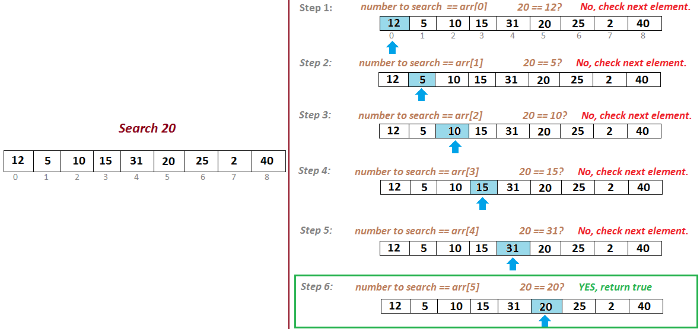
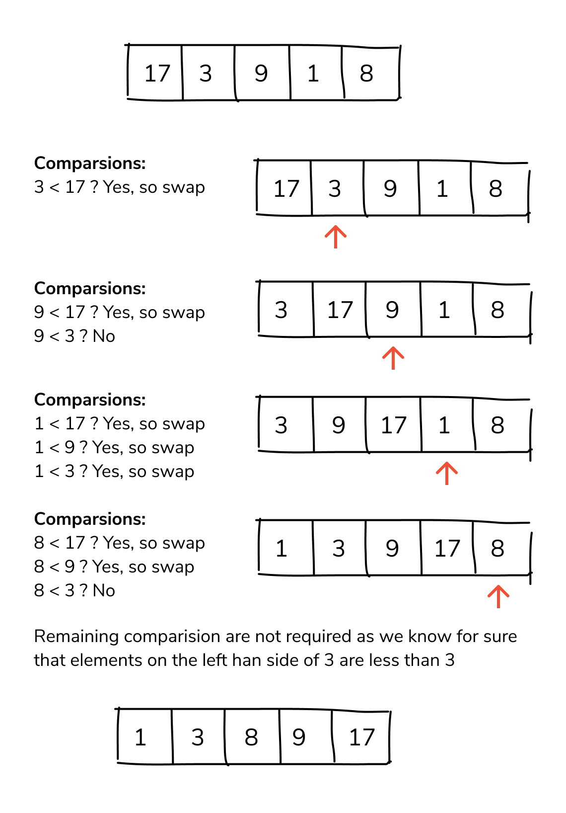
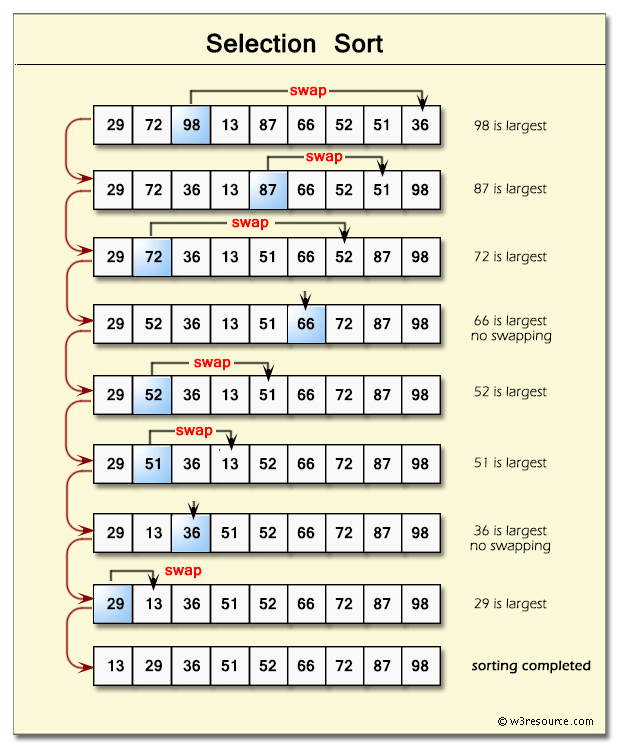
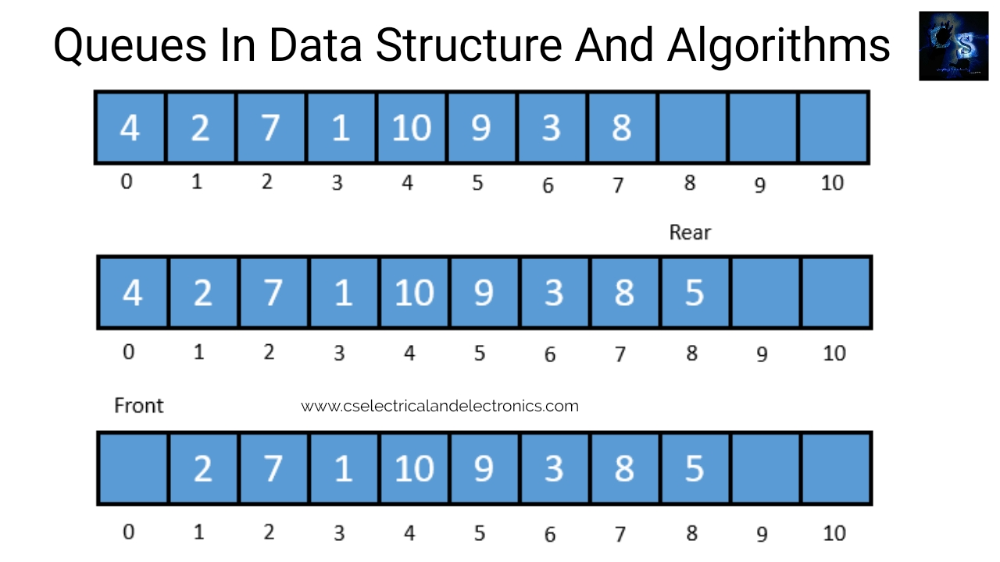

<!DOCTYPE html>
<html>
	<head>
		<title>Sorting and Searching ,Queue</title>
	</head>
	<body>
		<h1>SEARCHING ALGORITHMS</h1>
		<p>Searching is an operation or a technique that helps finds the place of a given element or 
           value in the list. Any search is said to be successful or unsuccessful depending upon whether 
           the element that is being searched is found or not</p>
           <h2>Some of the standard searching technique</h2>
           <ul>
           	<li>Linear search</li>
           	<li>Binary search</li>
           	</ul>
           	<h1>Linear search</h1>
           	<p>Linear search is a very basic and simple search algorithm. In Linear search, we search an 
               element or value in a given array by traversing the array from the starting, till the desired 
               element or value is found.</p>
               <center></center>
               <h4>Youtube resource for Linear search</h4>
               <ul><li><a href="https://youtu.be/C46QfTjVCNU?list=PLdo5W4Nhv31bbKJzrsKfMpo_grxuLl8LU">Linear Search Algorithm with example</a></li></ul>
               <h1>Binary search</h1>
               <p>Binary Search is used with sorted array or list. In binary search, we follow the following steps:</p>
               <ol>
               	<li>We start by comparing the element to be searched with the element in the middle of the list/array</li>
               	<li>If we get a match, we return the index of the middle element</li>
               	<li>If we do not get a match, we check whether the element to be searched is less or greater than in value than the middle element.</li>
               	<li>If the element/number to be searched is greater in value than the middle number, then we pick the elements on the right side of the 
               		middle element(as the list/array is sorted, hence on the right, we will have all the numbers greater than the middle number), and start 
               		again from the step 1.</li>
               	<li>If the element/number to be searched is lesser in value than the middle number, then we pick the elements on the left side of the middle 
               		element, and start again from the step 1.</li>
               	</ol>
               	<center></center>
               	<p>Binary Search is useful when there are large number of elements in an array and they aresorted. So a necessary condition for Binary search 
               	to work is that the list/array should be sorted.</p>
               	<h2>Features of Binary Search</h2>
               	<ol>
               		<li>It is great to search through large sorted arrays.</li>
               		<li>It has a time complexity of O(log n) which is a very good time complexity. It has a simple implementation</li>
               	</ol>
               	<h4>Youtube resource for binary  search</h4>
               	<ul><li><a href="https://youtu.be/V_T5NuccwRA?list=PLdo5W4Nhv31bbKJzrsKfMpo_grxuLl8LU"> Binary Search Algorithm with example</a></li></ul>
          <h1>Sorting</h1>
          <p>A sorting algorithm is an algorithm that puts elements of a list in a certain order((numerical, chronological, alphabetical, hierarchical etc)</p>
          <h3>1. Bubble sort</h3>
          <p>This algorithm uses multiple passes and in each pass the first and second data items are compared. if the first data item is 
             bigger than the second, then the two items are swapped. Next the items in second and third position are 
             compared and if the first one is larger than the second, then they are swapped, otherwise no change in 
             their order. This process continues for each successive pair of data items until all items are sorted.
             <center></center>
             <h4>Youtube resource for Bubble sort</h4>
             <ul><li><a href="https://youtu.be/o4bAoo_gFBU">Bubble sort algorithm with example</a></li></ul>
             <h3>2.Selection sort</h3>
             <p> Selection sort algorithm is one of the simplest sorting algorithm, which sorts the elements in an array by 
                 finding the minimum element in each pass from unsorted part and keeps it in the beginning. This 
                 sorting technique improves over bubble sort by making only one exchange in each pass.</p>
                 <center></center>
                 <h4>Youtube resource for Selection sort</h4>
                 <ul><li><a href="https://youtu.be/9oWd4VJOwr0">Selection sort algorithm with example</a></li></ul>
          <h3>3.Insertion short</h3>
          <p>Insertion sorts works by taking elements from the list one by one and inserting them in their 
          current position into a new sorted list .The steps are:</p>
          <ol>
          	<li> Compare the current element (key) to its predecessor.</li>
          	<li> If the key element is smaller than its predecessor, compare it to the elements before. Move the greater elements one position up to make 
          		space for the swapped element.
         </li>
          </ol>
          <center></center>
          <h4>Youtube resource for Insertion sort</h4>
                 <ul><li><a href="https://youtu.be/yCxV0kBpA6M">Insertion sort algorithm with example</a></li></ul>
          <h3>4. Quick sort</h3>
          <p>Quick sort is a divide and conquer algorithm. Quick sort first divides a large list into two smaller sublists: 
          	the low elements and the high elements. Quick sort can then recursively sort the sub-lists.
          	The steps are:</p>
          	<ol>
          		<li>Pick an element, called a pivot, from the list</li>
          		<li>Reorder the list so that all elements with values less than the pivot come before the pivot, while 
                   all elements with values greater than the pivot come after it (equal values can go either way). 
                   After this partitioning, the pivot is in its final position. This is called the partition operation</li>
          		<li>Recursively apply the above steps to the sub-list of elements with smaller values and separately 
                   the sub-list of elements with greater values.</li>
          	</ol>
          	<center></center>
          	<h4>Youtube resource for Quick sort</h4>
               	<ul><li><a href="https://youtu.be/QN9hnmAgmOc">Quick Sort Algorithm </a></li></ul> 
          	<h3>5.Merge sort</h3>   
          	<p>Merge sort is based on Divide and conquer method. It takes the list to be sorted and divide it in half to 
               create two unsorted lists. The two unsorted lists are then sorted and merged to get a sorted list. The two 
              unsorted lists are sorted by continually calling the merge-sort algorithm; we eventually get a list of size 
               1 which is already sorted. The two lists of size 1 are then merged.
         </p>	
         <center></center>
               <h4>Youtube resource for Merge sort</h4>
               <ul><li><a href="https://youtu.be/jlHkDBEumP0">Merge sort with example</a></li></ul>
        <h1>Introduction of Queue</h1>
		<p>A queue is a data structure that is best described as "first in, first out". A queue is another special kind of 
           list, where items are inserted at one end called the rear and deleted at the other end called the front. A 
           real world example of a queue is people waiting in line at the bank. As each person enters the bank, he 
           or she is "enqueued" at the back of the line. When a teller becomes available, they are "dequeued" at the 
           front of the line.</p>
           <center></center>
           <h3>Application of queue</h3>
           <ol>
           	<li>It is used to schedule the jobs to be processed by the CPU </li>
           	<li>When multiple users send print jobs to a printer, each printing job is kept in the printing queue. 
               Then the printer prints those jobs according to first in first out (FIFO) basis. </li>
           	<li> Breadth first search uses a queue data structure to find an element from a graph.</li>
           	<h4>Youtube resource for implementation of queue</h4>
           	<ul>
           		<li><a href="https://youtu.be/zp6pBNbUB2U">Introduction of queue</a></li>
           		<li><a href="https://youtu.be/YqrFeU90Coo?list=PLdo5W4Nhv31bbKJzrsKfMpo_grxuLl8LU" >Implementation of queue using Arrays</a></li>
           		<li><a href="https://youtu.be/RN1wzY_tnYU?list=PLdo5W4Nhv31bbKJzrsKfMpo_grxuLl8LU">Queue implementation using linked list</a></li>
           		<li><a href="https://youtu.be/EFO7bbFcOMw?list=PLdo5W4Nhv31bbKJzrsKfMpo_grxuLl8LU">Implement Queue Using Stack</a></li>
           	</ul>
           </ol>
         <h2>Here are the links for the problems to practice:</h2>
        <a href="https://www.w3resource.com/c-programming-exercises/searching-and-sorting/index.php">Sorting and searching</a></br>
        <a href="https://medium.com/techie-delight/queue-data-structure-practice-problems-and-interview-questions-f459bf0578db">Queue</a></br>
	</body>
</html>
